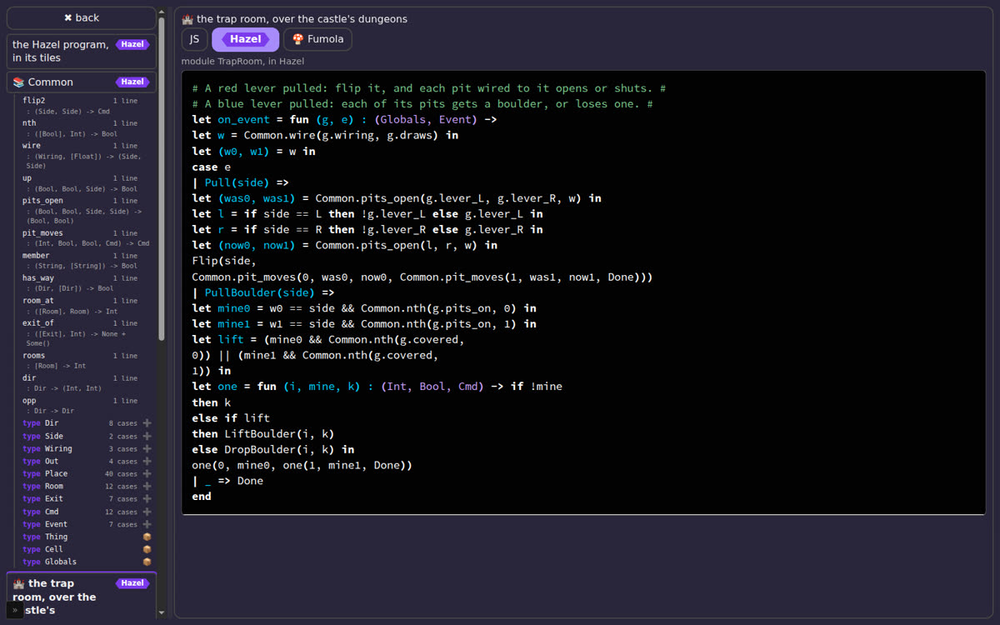
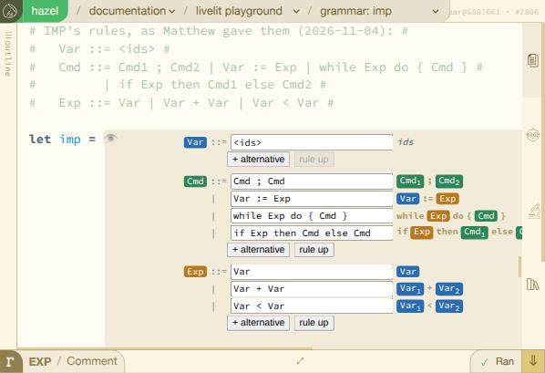

Hazel reports · ^report(37) · agenda work in progress · started 2026-11-02, updated 2026-11-05 08:57 MST
Agenda: Matthew and Cyrus, Thursday 2026-11-05, 10:00 Mountain
The topics Matthew brings to his meeting with Cyrus on Thursday 2026-11-05 at 10:00 Mountain time (10:00 MST, Boulder; moved from Wednesday 2026-11-04 at noon), in four parts: performance, Hazel embedded in JS programs, DSL tile editors as livelits, and long types shown whole. A work in progress: compiled over the days before the meeting and updated as items move, so each item says where it stands, as of when, and what it needs from the meeting.
The items, by section#
In short. As of 2026-11-05 08:57 MST.
- Performance: an edit and an undo each cost time in proportion to the program; three fixes on #2635 cut that, and O(log n) per edit is the question for the meeting.
- Hazlets, Hazel in a JS program's event handlers: the game's scripts, whether the library should be official, and
hazeljson npm. - DSL tile editors as livelits: Cyrus's idea, now with a first prototype on IMP's grammar (#2806); is this the shape he meant?
- Long types, shown whole: #2676 is green but not reviewed; Γ's version waits on Matthew's pick of how to offer it.
1. Performance, and the cost of undo#
What an edit and an undo cost as programs grow, and the questions next to it. Measured in Node on #2635 (livelits × modular editors). The whole investigation of undo, in time and in space, is ^report(38) (in progress, 2026-11-03); its time measurements are ^report(36); the series is ^report(35) and before.
1. Undo in O(log n)? What an edit and an undo cost now measured; three fixes on #2635 #1 #
^report(36)).^report(38)).^report(38)).Measured: a program of n top-level definitions (let v1 = v0 + 1 in …), an edit in the middle one, then undos and redos, each through the app's own update loop. From 400 to 6,400 definitions every step grows in proportion to n. At 6,400, after the first two fixes: an edit about 106 ms, an undo 292, a redo 184 (medians of 12), each followed by about 78 ms of statics. An undo cost about three edits and a redo about two, before the third fix (next). An undo is a redo plus a rebuild of the outline, which only the modular editors have: about a third of the undo, 39 ms at 3,200 definitions. A redo rebuilds it only when the program is not in the outline's memo of the last four, which is why the probe's last redo was slow. Even a redo that finds its outline costs 1.7 to 1.9 edits (^report(38), measured 2026-11-03, corrected 07:52). Pushing and popping the history itself costs almost nothing.
Found and fixed 2026-11-03: an undo rebuilt the syntax twice. The frame an undo schedules to realize the view counted as an edit, so it rebuilt in full the syntax the undo's own frame had just rebuilt. With it counted as an edit only when it changes the program, an undo is 40% faster and a redo 57% at 3,200 definitions; a redo then costs what an edit does (^report(38), the fix). On #2635 since 2026-11-03 (9df1b2601e). In numbers, at 3,200 definitions (a dev build, one run, medians of four steps): an undo went from 141 ms to 85 and a redo from 96 to 41, with an edit about 46, so an undo now costs under two edits and a redo about one. Not yet measured again at 6,400 or in a release build. And with the sidebar shown, every edit pays for the outline, about as much again as the edit itself, so making the outline's build touch only what changed matters for typing too, not only for undo.
In space: the history once kept a whole copy of the editor for every edit, and never cut it. On #2597 a Full Body tab kept 1,048 MB after 12 edits, 89 MB more with each. Andrew Blinn's compaction (6010128b7d, on #2469) keeps older entries without their derived data and always caps the history: 159 MB, level after the third edit. #2635 has it (52 MB); dev does not yet. It was found in October in five steps, after a test cap that never ran (^report(14)'s update). The whole story, and what is next for both costs, is in ^report(38).
Why it is linear: the incremental caches work (each step parses 1 or 2 definitions again, re-measures 1 or 2 chunks, compares 2 definitions' heads in statics), but around them are passes over every definition: rebuilding the top-level term, statics' walk down the chain of definitions, the outline (rebuilt on every undo and redo), layout's walk.
Fixed, on #2635: three fixes. Two pushed 2026-11-02 (394552d5d0, bfa36a6ede): the auto-probe recomputed the whole top level's skeleton every frame, and completion suggestions were computed after every typed digit; 31 to 46% off each step at 3,200 and 6,400 definitions. The third, pushed 2026-11-03 (9df1b2601e), is the undo fix above. #2635's CI is green with all three.
For the meeting: O(log n) per edit and per undo needs the top level as a balanced tree of definitions, not a chain of nested lets: each node keeps summaries (the names its subtree binds, its rows, its part of the skeleton), so each pass touches only the edited definition's path, and a snapshot shares every other node, so an undo can be a swap of roots. Is that the direction, and how much of it is worth doing before the livelits land? And dev's undo history still keeps every edit's whole editor state, never cut: should dev get the compaction now, or with #2469?
2. How much sharing is lost passing data to and from the eval worker measured; the worker keeps what it composed, and an undo finds it on Full Body; on #2635 since 11-05 #2 #
^ticket(666)'s probe, Node, GitHub's machines).Measured on #2635 in Node, on GitHub's machines (a dev build, one run each, ^ticket(666)'s probe), with the request built the way the app builds it: one piece per definition, the pieces the worker already holds left out, and the rest shared.
- After an edit, sharing does most of the work. On Full Body, with one number retyped, 26.8 KB go to the worker in 4 ms, against 1.95 MB in 260 ms without sharing. Kids' Choice: 52 KB against 494 KB. Emotion: 4 KB against 38 KB.
- Undo and redo are almost free on the wire: about 130 bytes each on Full Body, since the worker still holds the old values. Kids' Choice: 27 KB and 21 KB.
- A first send gains nothing: sharing takes about twice the time there (Full Body: 624 ms against 308).
- The reply is small on these slides: the program's value alone is 60 bytes to 1.2 KB, decoded in under half a millisecond. But few of the decoded blocks are the very objects decoded the time before: none of 192 on Kids' Choice, 60 of 137 on Full Body. So the page's identity-keyed memos miss on them, though at this size that costs little. Not yet measured: the real reply, with its probe samples.
Found and fixed: two slides were never sent in pieces. The fix is on #2635, and its CI is green.
- What happened: on Full Body and Kids' Choice, every request sent the whole program, encoded again each time. That was about 200 ms a request on Full Body.
- Why: before sending pieces, the cut checks that they hold exactly the statics' keys. On these two slides it counted too many: 60 on Full Body, 45 on Kids' Choice. Each livelit definition is checked against the
Livelitsignature, and its members' annotations reused the signature's types, ids and all, so the same keys turned up in every livelit definition. - The fix: each annotation gets ids of its own, a few lines in
ModuleHelpers, with a test that fails without it. Pushed to #2635 on 2026-11-03 (c079fa2e24); CI green, and the livelit deck in Firefox too. - After the fix, both slides go in pieces. On Full Body, sending the same program again cuts nothing, in 1.8 ms instead of about 200. An edit cuts 3 pieces in 35 ms and posts 12 KB shared, instead of about 27 KB (305 KB without sharing, instead of 1.95 MB). Kids' Choice: 0.3 ms again instead of about 55; an edit cuts 15 pieces and posts 10 KB shared. One number went the other way: an undo on Full Body now posts 7 KB, against about 130 bytes when sent whole; why is not yet looked into.
- The catch, and the next step: in pieces, the worker puts the program back together on every request: 47 ms on Full Body even when nothing changed (0.1 ms when it came whole), 8 ms on Kids' Choice. That is off the main thread, but still on the way to the result. Next: keep the assembled program while its pieces stand.
Since (2026-11-04 and the night of 11-05): the worker keeps what it composed. In pieces, the worker put the program back together on every request (47 ms on Full Body even when nothing changed). It now keeps the last four programs it composed, by their pieces’ hashes, so the same program again is taken as it was composed: Full Body again 36.2 → 0.8 ms, Kids’ Choice 9.3 → 0.1 ms (on trial/666-compose).
- But an undo did not find it. A probe that compares the program before an edit with the very same segment after the undo, piece by piece, found why: each analysis gave an item’s body hole a fresh id (
DefStatics,Exp.fresh(EmptyHole)), so the same item hashed as a new piece. That is also why an undo on Full Body posted 7 KB instead of about 130 bytes (above). - Fixed (trial): an item’s holes get ids derived from the item’s own (
Id.derive, a salt for each kind of hole), asModuleHelpers’ stable wrappers already do. And a livelit use’s expansion, which statics builds anew for every use on every analysis, now takes ids derived from the use’s (IdTagged.with_derived_ids). - On #2635 (2026-11-05, 06:42): the two commits, the worker’s memo (39ad6c8cdc) and the id fixes (ab7273c984), went onto #2635 as a fast-forward. Their CI was green on
trial/666-for-2635(Fast checks, Static checks, Full tests). - Now on Full Body: an undo and a redo find what the worker composed: it takes them in 0.7 and 0.6 ms, against 40 to 55 before. The same on a 1,000-definition program (0.5 ms).
- Not yet on the livelit slides (Emotion, Kids’ Choice): one piece each still hashes anew, its livelit definition. Traced: statics runs the definition to read its record, and the evaluator, pushing an ascription into each branch (
dynamics/transition/Ascriptions.re), gives each pushed ascription a fresh id, so the value it hands back is new on every run.
For the meeting: Ids that statics makes for scaffolding (an item’s holes, a livelit use’s expansion) now come from the term they scaffold, the same on every analysis, so a program analyzed again hashes as before. Should every id statics makes be like that (derived from the item and the order made), or only scaffolding? For the livelit definitions: (a) keep a definition's run by its source, so a re-analysis reuses the very value (and saves the run), (b) hash pieces without the ids inside run-time values, or (c) derived ids in the evaluator too? We would pick (a). The fix is at the source, in statics (each annotation gets ids of its own), not in the cut: the right place? And is the reply's lost identity worth fixing before livelit views move to the worker (^ticket(18))?
3. Why #2635's evaluator takes half dev's steps on the PerfBudgets program explained; a PR to dev, #2793: reviewed, ambivalent (speed against special cases) #3 #
^ticket(667)'s probe of 16 small programs; four shown. Fewer bounces per reduction, not fewer reductions.The PerfBudgets test (#2678, Matthew's, merged by Cyrus) counts the evaluator's trampoline steps on a fixed program: 206,834 on dev, 96,438 on #2635 after this week's dev merge.
Why (2026-11-03): the same reductions take fewer trampoline bounces on #2635, every form alike. A probe of 16 small programs counts about twice dev's steps on dev for each (a bare literal: 12 steps on dev, 0 on #2635). Two of our October commits, on #2597's line and so on #2635 but not on dev, remove the bounces: d0c56fb090 (binding a value that is already done calls its continuation directly) is half the gap, since #2635 with it reverted counts 152,746; 602498d7aa (the evaluator skips binds that only pass a value through) is, by its own measure, most of the rest. The first is mostly counting (allocation 4% lower, time inside the noise); the second was 16 to 25% faster on a call-heavy program.
Since: a PR to dev, #2793 (opened 2026-11-03). It brings both commits, the second rewritten for dev's own evaluator, and lowers PerfBudgets' budgets to match: dev then counts 96,438 steps cold and 270 after an edit, the same as #2635, against budgets of 106,000 and 300. Two new tests evaluate recursion 20,000 deep, to show the evaluator is still stack-safe. CI green (Fast checks, Static checks, Full tests); waiting for a review.
A review (2026-11-03, Negabinary): “4% memory improvement, 15% speed improvement, slight readability loss bc we’ve got more special-casing going on. Tradeoff make me ambivalent as to whether this goes in.” The two commits are separable: 602498d7aa (skipping binds that only pass a value through) carries the speed; d0c56fb090 (calling a done value’s continuation directly) is mostly the count, with the 4% allocation.
For the meeting: #2793: Negabinary weighs 15% speed and 4% memory against more special cases in the evaluator, and is ambivalent. Take it whole, take only the speed commit (602498d7aa), or close it and keep the halving on #2635's line only?
4. #2635 is up to date with dev's merge day merged; #2635 all green, the deck included #4 #
Dev's 10-29 merge day (149 commits: curried function definitions #2403, .rei interfaces, PerfBudgets #2678, the quick tests #2714 and more) merged into #2635 at 2cab658ef1. CI passed (Fast checks, Full tests, Static checks), and the 8 long-known Full-test failures are gone. The Firefox deck check failed on a workflow line the merge left stale (it ran dune through opam, which dev's toolchain step leaves off the path).
Since: the fix, 1d17541aaf, pushed 2026-11-02 16:29: the deck builds and runs. Three of its 12 cases failed, all on the eye that reveals a livelit's syntax, and a rerun failed a different set. The cause is the test harness, not the app (2026-11-03): dev's c206b02c25 gives a build of any branch but dev an IndexedDB database of its own, hazel:<branch>, and the deck's reset between cases (/fresh, in scripts/dev_serve.py) cleared only hazel, so each case met the edits of the one before. With the reset clearing the branch's database too, all 12 cases pass: on #2635 since 2026-11-03 (243874eecd). #2635 is green at its head, ab7273c984 (2026-11-05): Fast checks, Static checks, Full tests; the livelit deck in Firefox was green at c079fa2e24, the commit before the two pushed today.
For the meeting: The landing order: #2469 into dev, then #2635 retargeted to dev?
Next steps for this section
- Measure the undo fix at 6,400 definitions and in a release build; so far it is one dev-build run at 3,200.
- On the meeting's answer about O(log n): a design for the top level as a balanced tree of definitions (
^ticket(665)), starting with the outline, which every undo pays for, and every edit while the sidebar is shown. - The livelit definitions' last piece (
^ticket(666)): option (a), keep each definition's run by its source, unless the meeting picks (b) or (c). - #2793 as the meeting decides: take it whole, cut it to 602498d7aa, or close it.
- The landing order: #2469 into dev, then #2635 retargeted; and whether dev gets the undo compaction now or with #2469.
2. Hazlets: Hazel embedded in a JS program#
Hazlet, our shorthand from here on: Hazel embedded as a library within the event-handler system of a JavaScript program, so that some of the program's handlers are Hazel functions it calls with events and whose results it acts on. Messed Up Dress Up (MUDU), the game Matthew makes with M and N, is the canonical example, and so far the only one: five of its rooms hand their events to Hazel rules, on_event : (Globals, Event) -> Cmd, through a draft library, hazel-lib.js (#2711, with #2719 stacked on it). ^report(33) is a case study of those rules; ^report(34) asks whether the library should be official. ^report(39) gathers the Hazlet work so far: what runs today, where each piece stands, and what is next (in progress, 2026-11-03).
5. A demo: MUDU's game scripts to show #5 #

^report(32)).
The game, live at matthewhammer.org/kids-choice-games/dress-up/: its Scripting tab, where a room's rule is written in Hazel, in Fumola or in JS and runs as the room's event handler. ^report(32) times the game loading and checking every script in each of the three. ^report(33) reads what the rules meet today (a per-room view of the game, not its state) and proposes names for every place and thing, and types built on them.
For the meeting: Cyrus's read of the rules' types, and of what a Hazlet should give its handlers: a view built per room, as today, or the program's whole state under readable names?
6. Should the library be official? proposal #6 #
^report(34) proposes for the library.^report(34)'s suggestion: merge #2711 and #2719 as an experimental library, built on dev and labelled so; promise stability only for the small core (analyze, run, the value mapping) once a second Hazlet besides MUDU has used it.
A question beside it: where does a program's outline come from? MUDU's max-size script view has an outline on the left: each module's types, then its functions with their types, and a click goes to the definition. The game draws that outline itself, from the text. It asks Hazel only for each member's inferred type, through Hazel.outlineProgram (^ticket(587): two commits on #2719's branch, CI green, not merged yet, so the game does not use it yet).
- Without modular editors (dev, #2711, #2719), this works.
outlineProgramwalks our ownModuleProgram, the library's way of joining named modules into one program, not #2469's code. Revealing a definition and goto definition also work without modular editors, in the embed. - With modular editors (#2469), there is a second outline. Its
OutlineTreebuilds the outline in the editor's sidebar: modules, functions, values and types. It has no inferred types, case counts or source ranges, and it reads #2469's own program forms, which dev and the library do not have. So today there are two outline walkers, over two shapes of program. - One path: keep
outlineProgramin the experimental part, outside the stable core. If #2469 lands on dev, expose itsOutlineTreethrough the library instead, with types and source ranges added, and retire ours.
For the meeting: Merge as experimental, yes or no; and who else might build the second Hazlet? And the outline: keep the library's own walker for now, or build the library's outline on #2469's once it lands on dev?
7. A prototype npm package: hazeljs hazeljs 0.0.4 is on npm #7 #
A task for Claude: what it takes to publish a prototype npm package that anyone can install and use, documented the way npm packages are. Split into linked tickets: the package's build for node and the browser (^ticket(669)), TypeScript declarations (^ticket(670)), the README and a CHANGELOG (^ticket(671)), examples and an install check on GitHub (^ticket(672)), the name, license, versions and who publishes (^ticket(673)), and MUDU loading its Hazel from the published package (^ticket(674)).
A first version, the same day: hazeljs 0.0.1 (the name is Matthew's pick; Hazlet stays the name of the pattern), built from #2719 at 0d66c36618: hazel-lib.js, entry points for require and import and a browser script tag, TypeScript declarations, and a README the npm way, which sends readers to hazel.org and to the GitHub contributors for who makes Hazel. 648.5 kB packed (2.8 MB unpacked). Installed from its tarball into a fresh project, every example in the README runs. Found on the way: a module of about 150 members overflows Node's default stack, and the ms field always reads 0; both went into the README's limits (the second is fixed in 0.0.4, below).
Published 2026-11-02 at 11:03 MST, under Matthew's npm account: npmjs.com/package/hazeljs, so npm install hazeljs works. Checked from the registry, not the tarball: a fresh project installs it and runs the README's examples through require and import, and jsDelivr and unpkg both serve hazel-lib.js for a script tag. npm also listed a placeholder it made first, 0.0.0-stage, since deprecated.
Since, three more versions (all 2026-11-03), and the game on the package:
- 0.0.2: the package's source has a home, hazelgrove/hazeljs, which npm's page now names. Examples (Node with
requireand withimport, TypeScript in strict mode, a plain page), and a check on GitHub that packs the package, installs it and runs them on Node 18, 20 and 22. - 0.0.3: a tagline, Hazel edit boxes that extend ordinary JavaScript programs with custom behavior, and two README sections: errors, holes and unfinished code (MUDU's type error as the example), and how to check that hazel-lib.js really is the Hazel commit it names (a workflow rebuilds it from that commit and compares).
- 0.0.4: hazel-lib.js from #2719 at
1ba138ef28, withmsmeasured; it read 0 because js_of_ocaml moved the first reading of the clock to after the call. Built on GitHub, byte for byte the same file as Hazel's own deploy of that commit. - MUDU loads its Hazel from the package (hazeljs 0.0.1, from jsDelivr) since Dress Up 0.0.476 (
^ticket(674)).
Matthew's next ask: the trap room live in ^report(34), its Hazel rule editable in Hazel's tiles and the room answering each edit (^ticket(675)). A first version is live since 2026-11-03: the game, opened at the trap room, on ^report(34)'s page, where a reader pulls a lever or edits the room's rule in the Scripting tab. Next: Hazel's tiles and the room side by side on the page, wired through hazeljs (^ticket(677), ^ticket(678)).
For the meeting: Keep it under Matthew's npm account, or move it to a Hazel organization on npm (@hazelgrove)? And is the package the library alone, or also the Hazlet pattern: a helper that turns a program of modules into JS event handlers, as MUDU uses it?
Next steps for this section
- Hazel's tiles and the trap room side by side on
^report(34)'s page, wired through hazeljs (^ticket(677),^ticket(678)). - On the meeting's answer: #2711 and #2719 merged as an experimental library, or held.
- hazeljs: under Matthew's npm account or @hazelgrove, and whether the Hazlet helper joins the package.
- Cyrus's read of the rules' types, into
^report(33)'s names for places and things.
3. DSL tile editors as a kind of livelit#
Cyrus's idea, from about two weeks before this meeting, which Matthew brings back for discussion: a new kind of livelit, perhaps built in, for languages defined inside Hazel.
8. A livelit whose literal is a grammar and whose view is a tile editor for it idea; a first prototype on draft #2806 #8 #

^report(41)).- The literal is a Hazel datatype describing a context-free grammar: its production rules.
- Behind the scenes, a parser generator reads that grammar. Menhir is one candidate; a simpler generator could come first if needed.
- The livelit's model, view and update present a tile-based editor for those production rules.
- The expansion is the program's abstract syntax as a parse tree, as a Hazel value, or something analogous.
Related so far. Cyrus's interest in DSLs in Hazel as tile-based livelits, and his pointer to language boxes (Diekmann and Tratt's Eco editor: each box has its own lexer and parser, and is one token to its parent) for #2542, the shared-tokenizer limit on sub-language tiles. Fumola as tiles: a sort in Hazel's own tile grammar (#2529), and ^fumola_wip on the remote-splices branch (2026-09-29), a livelit that edits Fumola code as tiles, a first prototype of a DSL as a tile livelit. Hazel's own tiles come from a fixed table of forms in its source (src/haz3lcore/lang/Form.re); this would make the grammar a value a program writes.
A question the parser raises: Menhir generates OCaml code when Hazel is built, so on its own it cannot read a grammar written in a running program. A grammar given at run time needs a parser built at run time, such as an Earley parser, which accepts any context-free grammar, or tables built in the browser. Or the grammar's definition could be compiled ahead of time for built-in DSLs only.
A first prototype, since 2026-11-04 (Matthew's ask: the model is a production rule system, its rules in a certain order; IMP's rules first): the slide Livelit Playground / Grammar: IMP on draft #2806, into #2635's branch, written up in ^report(41). Its model is the rules, in order; each alternative is edited as a line of words and drawn as chips colored by rule; its expansion is the grammar itself, a Hazel value, which the slide's program reads to write an example sentence for each alternative, so reordering the rules changes the examples. Not built yet: a parser at run time, and programs in the language as tiles. Trying it found a crash in #2635 (the explainer's highlighting with the caret on any livelit), fixed in #2810.
For the meeting: Is this the shape Cyrus has in mind for DSLs in Hazel? Built-in, or user-defined livelits? Grammars given at run time, or compiled ahead of time? And what is the first demo: a small grammar (arithmetic, or a JSON-like data language), its tile editor, and its expansion as a Hazel value?
Next steps for this section
- A parser built at run time for the grammar (an Earley parser), so a program in the language can be read.
- Programs in the language as tiles, and the expansion as their parse tree.
- The first demo the meeting picks: arithmetic, or a JSON-like data language.
- #2806, the prototype, and #2810, the explainer crash it found, into #2635.
4. Long types, shown whole#
Matthew's two questions from the morning of 2026-11-04: where the type expansion PRs stand on the way to dev, and whether the types in Γ get the same treatment.
9. The type expansion PRs: where they stand, and can they go to dev? #2676 green and mergeable, not reviewed #9 #
#2676, into dev: the cursor inspector can show a long type whole, on several lines. A toggle beside the type in the inspector's bar opens a full view: the type laid out on several lines, and each alias's definition beside its name (issue #2674).
- Mergeable, but not reviewed. CI green at its head, 31ad35d388 (Fast checks, Full tests). No conflicts with dev, but 174 of dev's commits behind it (the merge day and since), so it wants dev merged in and CI again before it lands. Opened 2026-10-12; a review was requested, none yet.
- One fix stays on #2635: the full view's parentheses for module signatures, since dev prints a signature as a labeled tuple.
- The same for Γ is draft #2698, stacked on #2676: the next item.
For the meeting: Who reviews #2676? And should #2698 join it as one PR, or follow it?
10. And the types in Γ: shown whole, on several lines? built: draft #2698 toward dev, and on #2635; one pick waits #10 #
^ticket(468)).Yes, built, in two places. In Γ (the context inspector), a toggle on each entry lays a long type out under its name, on several lines at 60 columns, an alias's definition too; Γ grows to 40% of the window while one is open.
- Toward dev: draft #2698, stacked on #2676, CI green (2026-10-19). Against today's dev it conflicts in one file,
Globals.re. - On #2635 and #2597: the same, plus a setting on the Colors slide,
^unfold, to try three ways to offer it: always, on hover, or by right-click. Green on both since 2026-10-20. - Waiting on Matthew since 2026-10-20 (
^ticket(468)): which of the three to keep.
For the meeting: Always, on hover, or by right-click? And should Γ's version go to dev with #2676, or after it?
Next steps for this section
- A reviewer for #2676, then dev merged into it (174 commits) and CI again before it lands.
- Matthew's pick for ^unfold: always, on hover, or by right-click (
^ticket(468)). - Then #2698 rebased on dev (one conflict, Globals.re), out of draft, and joined to #2676 or after it, as the meeting decides.
If there is time#
- The landing order for the livelits (
^ticket(642)): #2469 to dev, then #2635 retargeted, now that #2635 has dev's merge day. - Evaluator trials with green CI (
^ticket(559),^ticket(548)): the fast path for final terms, and lists without an id per element. PRs to dev, or not yet?^report(35)weighs the options. - Livelit views evaluated in the worker (
^ticket(18)), which the worker-sharing question bears on.
How this agenda is kept#
- Started 2026-11-02 from the meeting's ticket on the work dashboard (
^ticket(664)), which collects the topics as they come in; Matthew adds topics through Wednesday. The three sections are his. - Each item gives who asked, its status and the time that status is from. PRs are hazelgrove/hazel's; commits are on the PR named beside them.
- Each item has a copy item chip: it copies the item's number, its id (which stays when items are reordered), its title and its link. Pasted to Claude with a request, it names the item exactly; the agenda is changed and republished in that turn.
- The data: in this page's
<script type="application/json" id="report-data">element and in037/data/agenda.json; the page is made by037/drivers/gen037.py.